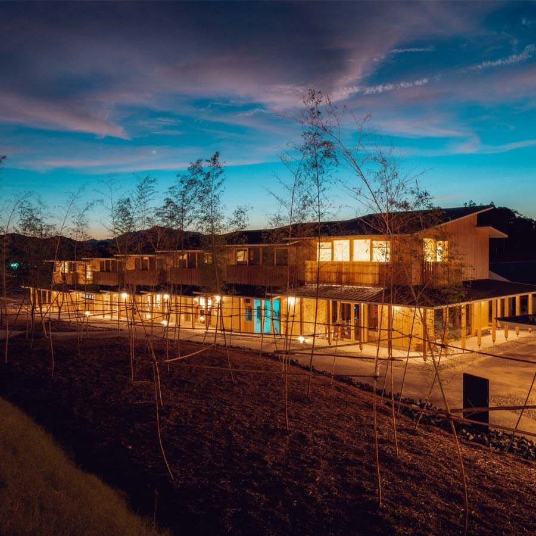

- Address
VISON resort, 672-1 Vison, Taki-cho, Taki-gun, Mie
- Phone
+81 598 39 3090
- Check-in and check-out
Check-in 15:00–18:00 · check-out by 11:00 · breakfast included
Hatago Vison

At the front desk
Rooms and beds
- Nights
- 17–18 Dec
- Stay
- Ise-Shima · Hatago Vison
- Rooms
- Concept Room for Roy, Renee, Arlene and the twins; Twin Room for Mum & Dad
Notes and sources
Stay notes and saved evidence
Kyoto: 0 nights on the route. MIMARU (Thu 17–Sat 19 Dec, the same nights as Isuzugawa/VISON) was cancelled via the tripla portal on 28 Sep 2026 — free of charge, full MYR 3,335.65 (≈ JPY 129,792 · ≈ SGD 1,051.31) refund confirmed by email.
Ise-Shima · Hatago Vison
Check-in 15:00–18:00 · check-out by 11:00 · breakfast included
Ise-Shima (Taki)
Booked Hatago Vison
Ise-Shima (VISON, Taki)
Confirmed Hatago Vison, 2 rooms booked on the official website 28 Sep (#3946-8222-9008 and #3946-8223-2574), breakfast included. All Trip.com Hotel Vison bookings were cancelled free
Booking checks
- Night
- Thu 17 Dec 2026
- Working route
- Ise-Shima (VISON)
- Saved bed evidence
- Hatago Vison, Taki: Concept Room for Roy, Renee, Arlene + twins; Twin Room for the grandparents (booked on the official website 28 Sep). Kyoto MIMARU has been cancelled (28 Sep, free, full refund).
- Coverage for 7
- 7 / 7 in VISONConfirmed
- Conflict / gap
- Covered by 2 Hatago Vison rooms. The twins are booked as infants with no futon; bed guards available on request. Kyoto MIMARU for the same night was cancelled 28 Sep (free, full refund). Source
- Night
- Fri 18 Dec 2026
- Working route
- Ise-Shima (VISON)
- Saved bed evidence
- Hatago Vison, Taki: Concept Room for Roy, Renee, Arlene + twins; Twin Room for the grandparents (booked on the official website 28 Sep). Kyoto MIMARU has been cancelled (28 Sep, free, full refund).
- Coverage for 7
- 7 / 7 in VISONConfirmed
- Conflict / gap
- Same as Thu 17 Dec. Source
Ise-Shima · Hatago Vison
Google Maps ↗